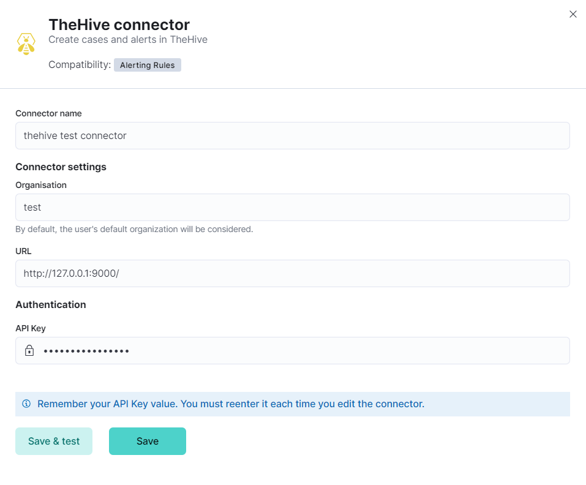
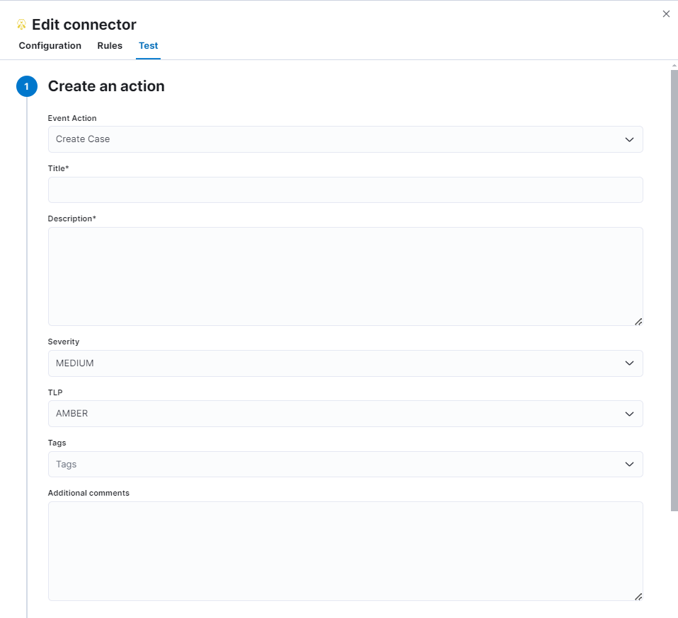
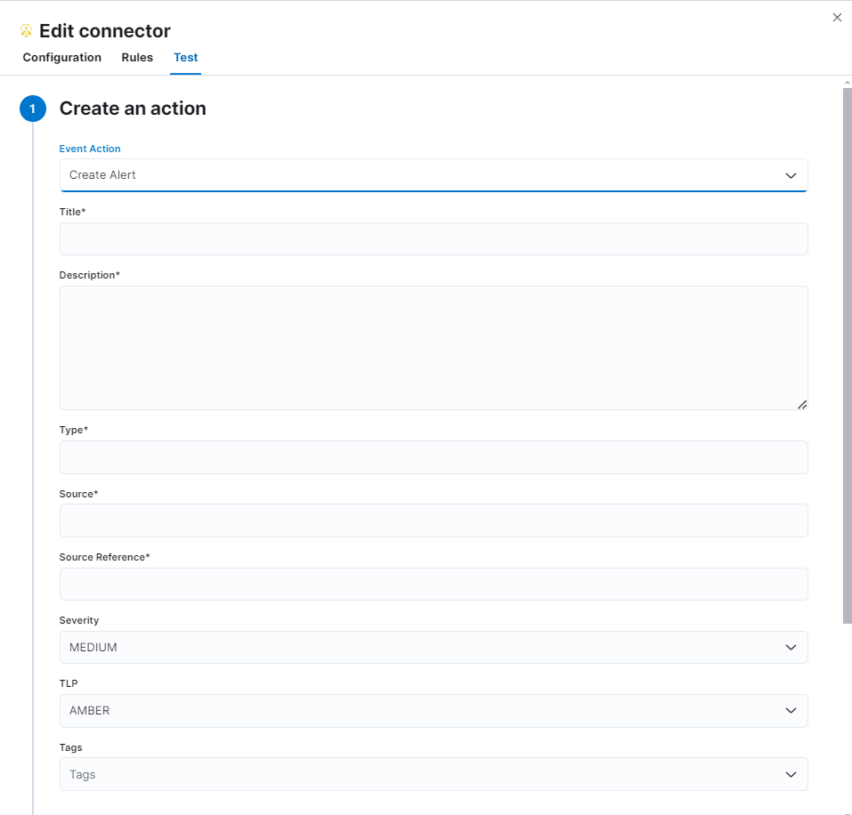

TheHive connector and action
editTheHive connector uses the TheHive (v1) REST API to create cases and alerts.
Create connectors in Kibana
editYou can create connectors in Stack Management > Connectors or as needed when you’re creating a rule. For example:

Connector configuration
editTheHive connectors have the following configuration properties:
- Name
- The name of the connector.
- Organisation
- Organisation name in which user intends to create cases or alerts.
- URL
- TheHive instance URL.
- API Key
- TheHive API key for authentication.
Test connectors
editYou can test connectors as you’re creating or editing the connector in Kibana. For example:


TheHive actions have the following configuration properties.
- Event Action
- Action that will be performed in thehive. Supported actions are Create Case (default) and Create Alert.
- Title
- Title of the incident.
- Description
- The details about the incident.
- Severity
-
Severity of the incident. This can be one of
LOW,MEDIUM(default),HIGHorCRITICAL. - TLP
-
Traffic Light Protocol designation for the incident. This can be one of
CLEAR,GREEN,AMBER(default),AMBER+STRICTorRED. - Tags
- The keywords or tags about the incident.
- Additional comments
- Additional information about the Case.
- Type
- Type of the Alert.
- Source
- Source of the Alert.
- Source Reference
- Source reference of the Alert.
Connector networking configuration
editUse the Action configuration settings to customize connector networking configurations, such as proxies, certificates, or TLS settings. You can set configurations that apply to all your connectors or use xpack.actions.customHostSettings to set per-host configurations.
Configure TheHive
editTo generate an API Key in TheHive:
- Log in to your TheHive instance.
- Open profile tab and select the settings.
- Go to API Key.
- Click Create if no API key has been created previously; otherwise, you can view the API key by clicking on Reveal.
- Copy the API key value to configure the connector in Kibana.